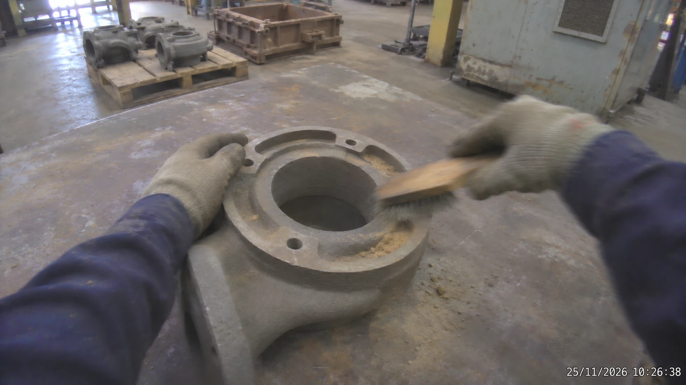
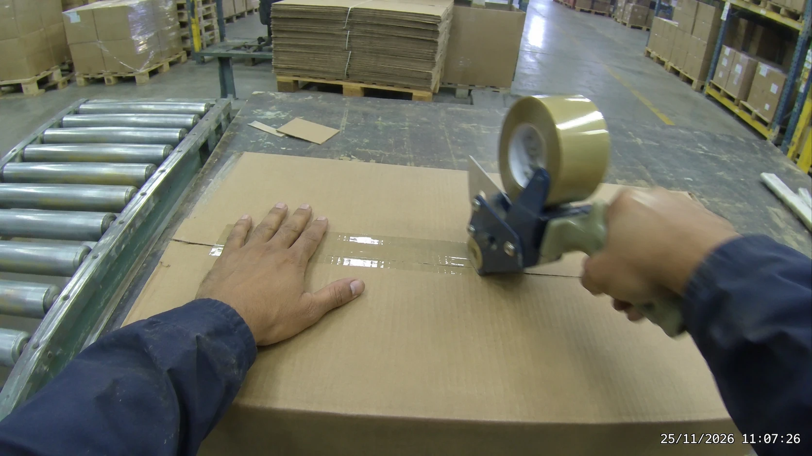
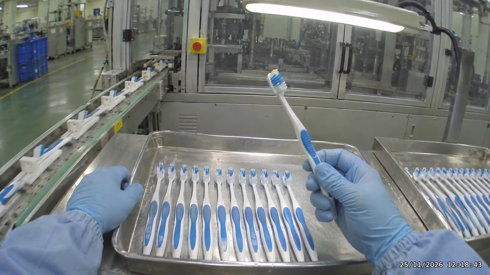

Train on the real world, not the lab bench
Pulse gives AI teams consented, multi-sensor data from working mines, foundries, packaging lines, factories and farms, labelled to your schema.
What we capture
First-person footage of skilled work, recorded during normal shifts, with the sensors your model needs on the same clock.
 REC 08:42:17
REC 08:42:17Hand-held rock drilling at the rock face, with both hands on the tool.

REC 10:26:38Brushing moulding sand from a cast valve body before machining.

REC 11:07:26Sealing cartons with a tape gun beside a roller conveyor.

REC 12:18:43Gloved visual inspection of toothbrushes coming off an automated line.
| Stream | What you get | Typical formats |
|---|---|---|
| Egocentric video | Helmet and chest cameras with a wide field of view, hands and tools in frame | MP4 (H.264 or H.265), frames on request |
| Wrist and hand | Wrist cameras and IMUs for fine manipulation and tool contact | MP4, CSV, Parquet |
| Fixed views | Overview cameras covering the whole workstation or line | MP4 |
| Thermal and depth | Thermal cameras on hot processes, depth cameras and LiDAR scans | Radiometric frames, PLY, LAS |
| Machine signals | PLC tags, vibration, acoustics and power, synced to the video | Parquet, CSV |
| Labels | Boxes, tracks, hand keypoints, masks, actions and captions | COCO, YOLO, JSONL, RLDS, LeRobot |
Why it matters to your model
Lab footage teaches a model the easy version of a task. Production floors show it everything else.
The long tail, recorded
Dust, glare, wet rock, worn tools and bad lighting that a lab never shows a model.
Skilled hands on real tools
Operators who do the task every day, so motions are efficient, varied and correct.
Process context
Video and machine signals on one clock, so models see cause and effect, not just pixels.
Provenance you can defend
Owner sign-off, individual consent and a file-level record for every session.
Where we collect
Our partners are family offices that own operating companies serving major clients. Access is agreed with the owners.
| Industry | Region | Example tasks | Sensors available |
|---|---|---|---|
| Mining | Africa | Drilling, scaling, haulage, maintenance | Helmet cam, IMU, thermal, LiDAR |
| Foundries | Africa | Pouring, fettling, sand removal, finishing | Helmet cam, thermal, fixed cams |
| Packaging | India | Carton erecting, sealing, palletising, line checks | Helmet cam, line cams, PLC data |
| Manufacturing | Asia | Assembly, machine tending, visual inspection | Helmet and wrist cams, fixed cams |
| Agriculture | Russia | Field operations, harvest, livestock handling | Vehicle cams, drones, multispectral |
Need a task we don't list? We script it from your spec and source the objects and sites to match.
How a partnership works
Start small, check the data in your own pipeline, then scale.
- Scope
A 30-minute call to agree tasks, sensors, label schema and acceptance criteria.
- Pilot
A small paid pilot on one site, so you can test the data before committing.
- Scale
We add sites and shifts in parallel and deliver on a rolling basis.
- Expand
Add tasks, regions or sensors as your model improves. Exclusive collection on request.
Formats your stack reads
COCO, YOLO, RLDS, LeRobot, JSONL and Parquet, or your own schema.
Delivered where you work
Straight to S3, GCS or Azure Blob, or on encrypted drives.
Licensing that fits
Non-exclusive by default. Exclusive and custom-collected datasets on request.
Most robot data comes from labs. Yours can come from the floor.
Real shifts, real tools, real conditions, collected with consent and checked before it reaches you. Tell us what your model needs to learn.
Questions labs ask
Can we see data before committing?
Yes. We send sample footage and labels, and most partners then run a small paid pilot on one site.
Can you collect to our exact spec, or on our hardware?
Yes. We script tasks from your spec, and our field teams can install and run your own rig on site.
Which regions and industries can you cover?
Mines and foundries in Africa, packaging in India, manufacturing across Asia and farms in Russia today. Ask about anything else and we'll check the network.
How is consent handled?
The site owner signs off, every person on camera gives individual consent in their own language, and the consent record travels with the data.
Who owns the data?
You get a licence to train, fine-tune and deploy. Exclusive rights are available, and your data is never resold or reused for other clients.
How fast can we start?
We give you a timeline after the scoping call, based on the sites, sensors and volume you need.
Start with a pilot.
Request a pilot
Tell us what your model needs to see. We'll reply with a sample and the sites that can produce it.